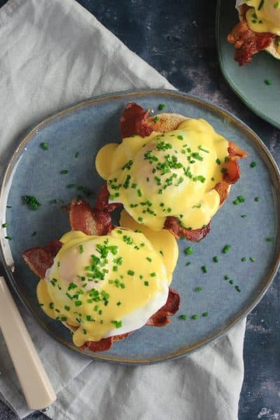

About Catering
Tradition since 1889
At Gourmet Au Catering, we believe every event deserves the perfect bite and impeccable service. Founded on a passion for gourmet flavors and exquisite presentation, we specialize in crafting bespoke menus that elevate every occasion. Whether it’s an intimate gathering, a corporate function, or a grand celebration, we take pride in delivering a culinary experience tailored to your unique vision. Using only the freshest ingredients and innovative techniques, our team creates dishes as beautiful as delicious seasonal and locally sourced ingredients
